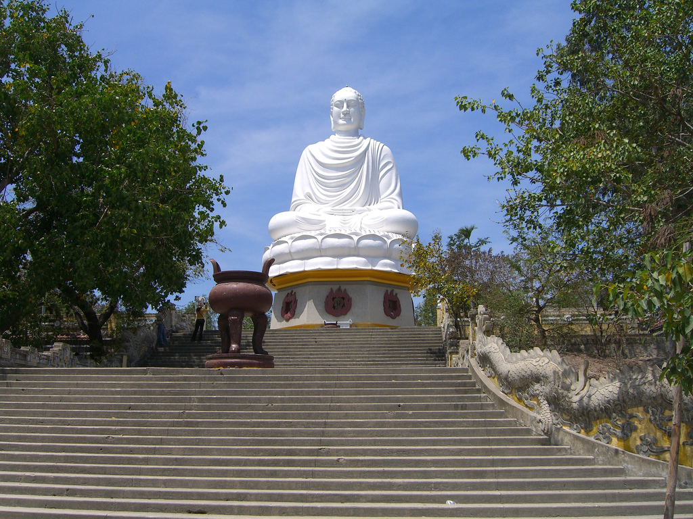
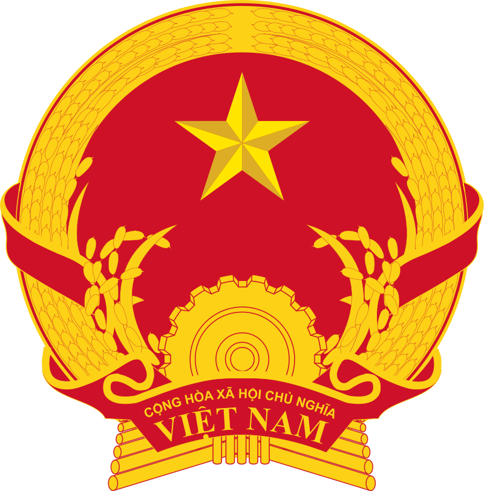

×

Vietnam
Флаг
Флаг Вьетнама введён 30 ноября 1955 как флаг Демократической Республики Вьетнам, занимавшей тогда северную часть страны (Северный Вьетнам). На нём изображена жёлтая пятиконечная звезда на красном фоне. Соотношение сторон флага составляет 2:3. В 1945—1955 очертания звезды на флаге были несколько иными.
Звезда олицетворяет лидерство Коммунистической партии Вьетнама, красный цвет означает успех революции, а пять концов звезды иногда трактуются как рабочие, крестьяне, солдаты, интеллигенция и молодёжь.
С 1976 года, когда Южный Вьетнам официально объединился с Северным, — флаг Социалистической Республики Вьетнам.
Герб
Герб Вьетнама — изначально был принят как герб Демократической Республики Вьетнам (Северный Вьетнам) 30 ноября 1955 года.
Смоделирован по всем канонам и с учётом всех основополагающих принципов базовой конструкции герба КНР, со всеми символами коммунистической партии, включая жёлтую (золотую) звезду на красном полотне, с направленной социалистической тематикой.
Шестерёнка и зерновые культуры представляют союз сельского хозяйства и промышленной рабочей силы в общей коммунистической модели.
Стал общенациональным после воссоединения с Южным Вьетнамом 2 июля 1976.

____